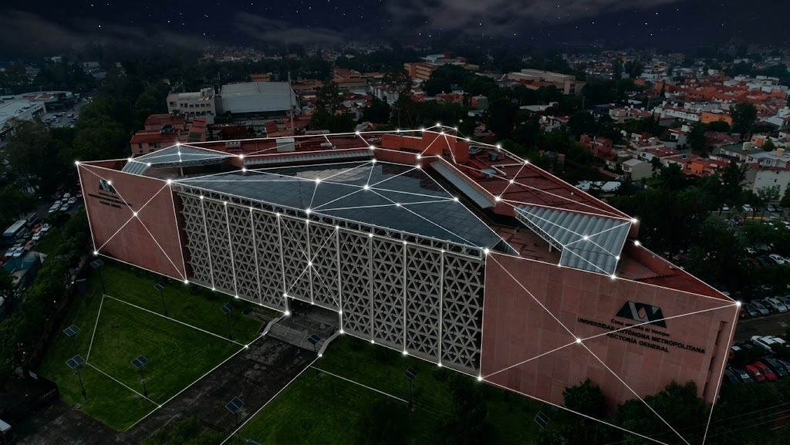

meuami.org
Comunicado · Movimiento Estudiantil UAM-I
El Movimiento Estudiantil UAM-I informa a la comunidad universitaria sobre la segunda mesa de diálogo con las autoridades
La primera mesa se realizó el 23 de noviembre. Cupo limitado; transmisión en vivo por Facebook y YouTube en @UAMIztapalapaOficial.